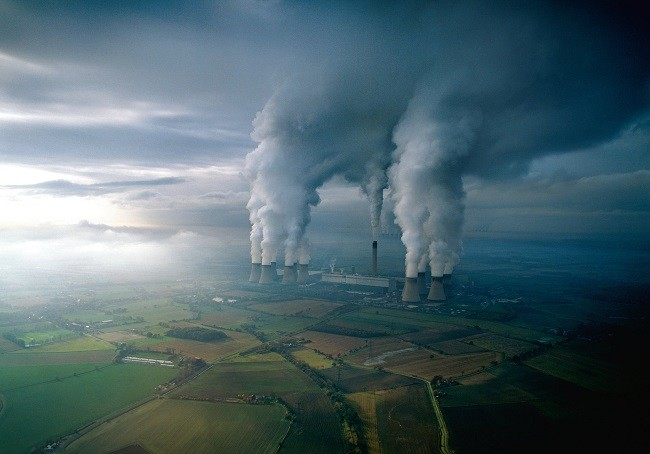
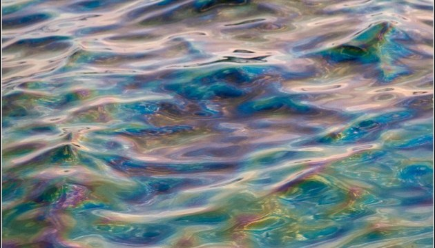

Екологічний стан України
Екологічна ситуація в Україні на кінець XX ст.
Основними центрами зосередження екологічних проблем у кінці XX ст. в Україні були високоурбанізовані райони, міські агломерації та великі промислові центри. Питома вага забруднених стічних вод у загальному їх обсязі становить в цілому по Україні 28%, в тому числі у Харківській та Луганській областях — більш ніж 70%, у Чернівецькій, Одеській, Донецькій областях — понад 50%. Майже 1/4 частина шкідливих викидів промислових підприємств не уловлювалася і потрапляла в атмосферу без очищення. Найбільші викиди цих шкідливих речовин в атмосферу також характерні для високо урбанізованих областей.
Так, на Донецьку область припадало майже 1/3 всіх викидів по Україні, до 30% — на Дніпропетровську і майже 15% — на Луганську область. Основні обсяги скидів у воду та викидів у повітря локалізовані у містах та міських агломераціях. Основними забруднювачами були промислові підприємства. В УРСР було зосереджено 1200 шкідливих виробництв союзного підпорядкування. У 78 містах республіки шкідливі речовини в атмосфері перевищували гранично припустимі норми в 60 разів, у 76 містах забрудненість питної води перевищувала норми в 12 разів. Надмірно забрудненими стали Дніпро, Сіверський Донець, Дністер, Південний Буг. Екологічно тривожний стан склався в акваторії Чорного та Азовського морів.
Величезна сільськогосподарська освоєність та невиправдана розореність земель, концентрація промислового виробництва та його застаріла технологія, хижацьке ставлення людини до природи унеможливлюють стабільний розвиток на нашій Землі. Що таке забруднення, чим воно обумовлене і які його наслідки. Варто лише зауважити, що забруднення проявляється через надмірну концентрацію тих чи інших хімічних елементів або енергії вище фонових або допустимих норм. Воно може бути природного й техногенного походження, і може викликати якісні зміни характеристик основних компонентів природи та їх складових і негативно впливати на живі організми.

Саченко Вікторія
Привіт! Мене звати Віка. Мені 17 років і я в цьому році закінчила школу. Ніколи не думала, що буду приймати участь МАН з екології. Екологія - це наука, яка вивчає відносини організмів (особин, популяцій, біоценозів і т.п.) між собою та з навколишньою неорганічною природою, загальні закони функціонування екосистем різного ієрархічного рівня, середовище мешкання живих істот (включаючи людину). Посилення впливу людини на природу надає все більшої гостроти екологічним проблемам взаємодії людини та природи, людства та біосфери.